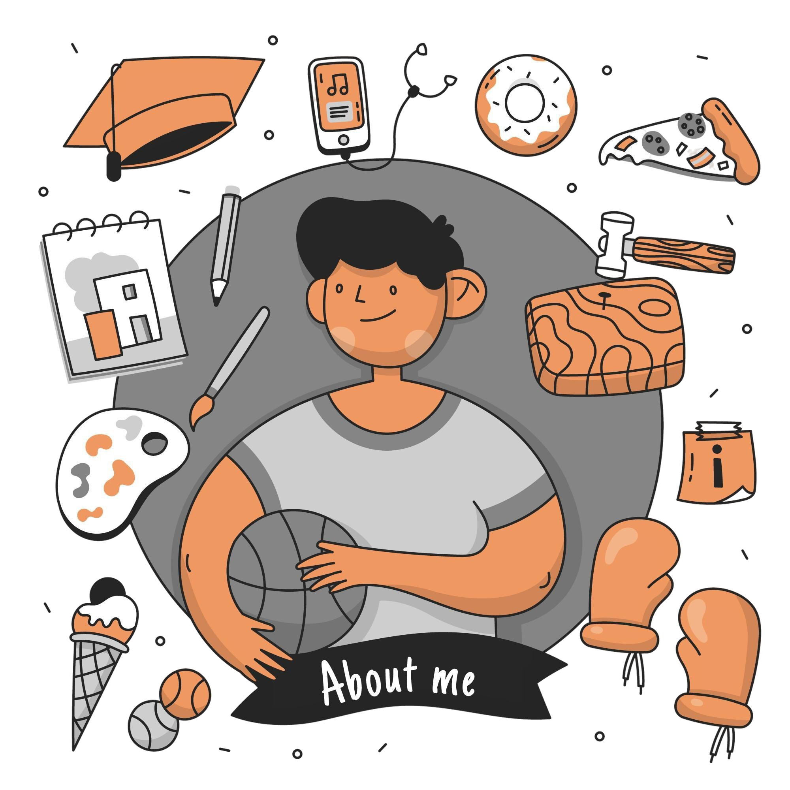

Full-stack developer

Biografia de Leonardo da vinci

Leonardo da Vinci (1452-1519) foi um pintor italiano e um dos maiores gênios de seu tempo. A tela "Mona Lisa", verdadeira obra-prima, o notabilizou como um dos principais pintores da Renascença. Muitas de suas obras se perderam ou ficaram inacabadas. Conhecem-se apenas 12 telas de Leonardo de autenticidade reconhecida, sendo visível a importância que o artista concedeu aos contrastes entre luz e sombra e principalmente ao movimento.
AcessarSite de sobre tecnologia
Tecnologia refere-se ao conjunto de conhecimentos, técnicas, ferramentas e processos utilizados para resolver problemas, melhorar a vida humana e alcançar objetivos práticos.
AcessarMinha formação

Aqui você vai conhecer um pouco mais sobre a minha trajetória educacional, cursos realizados, experiências acadêmicas e habilidades desenvolvidas ao longo do tempo. Compartilho minha formação técnica, experiências na faculdade, além de projetos e aprendizados que fizeram parte da minha jornada. Também destaco os idiomas que estudo e outras áreas em que venho me desenvolvendo. Sinta-se à vontade para explorar a página e saber mais sobre minha base de conhecimento e evolução profissional!
Ver maisSobre min
Hobbies são atividades de lazer praticadas no tempo livre para relaxamento e prazer. De acordo com o Sam's Club, um hobby pode ser uma excelente forma de lazer e descontração. Eles ajudam a aliviar o estresse do dia a dia e podem ser qualquer coisa que você goste de fazer, desde atividades manuais até esportes ou estudos
Ver mais